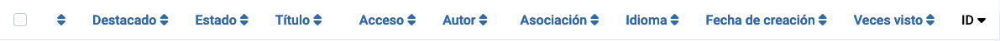
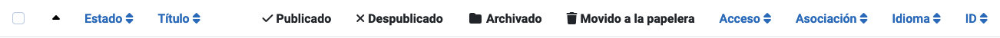
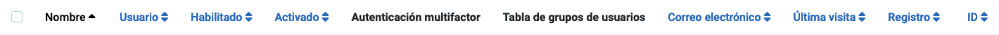

Los encabezados de columnas aparecen en las vistas de lista para indicar la naturaleza de la información en esa columna. Los encabezados varían de un componente a otro. Muchos encabezados de columna pueden ser utilizados para ordenar la lista en esa columna, pero esto no siempre es el caso. Por ejemplo, en las vistas de lista de Categoría, las cuatro columnas de Estado no se utilizan para ordenar ya que todos los elementos en esas columnas tienen el mismo estado.
Algunos ejemplos
Encabezados de columna de la lista de Artículos

Encabezados de columna de la lista de Categorías

Encabezados de columna de la lista de Usuarios

Ordenar por Columna
Para cambiar el orden de la lista, seleccione el ícono de ordenación de la columna en la lista. En una columna que no se está utilizando para la ordenación, esto es un doble cheurón hacia arriba/abajo (). Para la columna utilizada para la ordenación, es ya sea un cheurón hacia arriba () o un cheurón hacia abajo () para indicar la dirección de ordenación actual, ascendente o descendente.
Algunos Encabezados Comunes
Casilla de verificación Para seleccionar todos los artículos, marcar la casilla en el encabezado de la columna.
El botón de la barra de herramientas 'Acciones' se activa. Una acción puede aplicarse a los
elementos visibles en la página. No se aplica a los elementos en páginas subsecuentes
que no son visibles.
Ordenar Puedes cambiar el orden de un artículo dentro de una lista de la
siguiente manera:
En las Opciones de Filtro, limitar la lista a elementos que se van a ordenar, por ejemplo
elementos en un idioma seleccionado o elementos por un autor seleccionado.
Seleccionar el icono de ordenación en el encabezado de la primera
columna para activarlo.
Seleccionar uno de los iconos de elipsis vertical
que aparecen cuando la ordenación está activa y arrastrarlo hacia arriba o hacia abajo para cambiar la
posición de esa fila en la lista.
Título o Nombre El título del elemento suele ser un enlace a la
página de Edición para ese elemento.
ID Un número de identificación único para este artículo. No se puede cambiar.